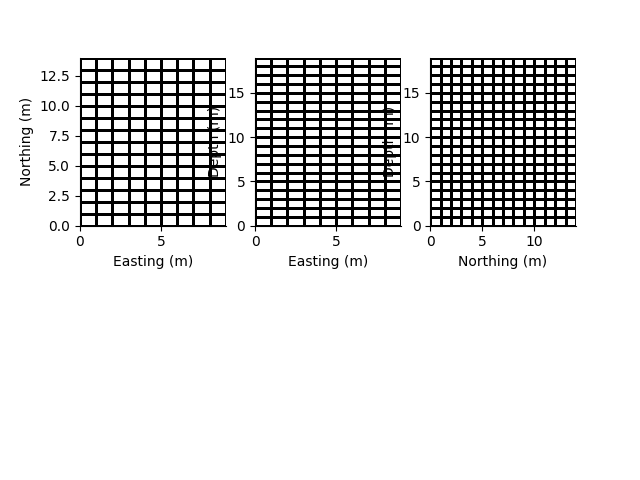
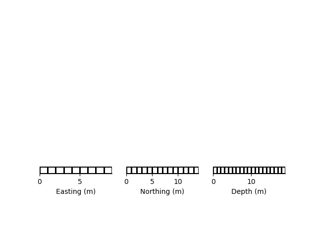

Note
Click here to download the full example code
3D Rectilinear Mesh
This 3D rectilinear mesh defines a grid with straight cell boundaries.
from geobipy import StatArray
from geobipy import RectilinearMesh3D
import matplotlib.pyplot as plt
import numpy as np
Specify some cell centres in x and y
x = StatArray(np.arange(10.0), 'Easting', 'm')
y = StatArray(np.arange(11.0), 'Northing', 'm')
z = StatArray(np.arange(12.0), 'Depth', 'm')
rm = RectilinearMesh3D(xEdges=x, yEdges=y, zEdges=z)
rm2 = rm[:, :, 5]
rm3 = rm[:, 5, :]
rm4 = rm[5, :, :]
plt.figure()
plt.subplot(131)
rm2.plotGrid()
plt.subplot(132)
rm3.plotGrid()
plt.subplot(133)
rm4.plotGrid()
# ################################################################################
import h5py
with h5py.File('rm3d.h5', 'w') as f:
rm.toHdf(f, 'test')
with h5py.File('rm3d.h5', 'r') as f:
rm2 = RectilinearMesh3D.fromHdf(f['test'])
rm.pyvista_mesh().save('rm3d_a.vtk')
rm2.pyvista_mesh().save('rm3d_b.vtk')
xx, yy = np.meshgrid(rm.x.centres, rm.y.centres)
height = StatArray(np.sin(np.sqrt(xx ** 2.0 + yy ** 2.0)), "Height")
rm = RectilinearMesh3D(xEdges=x, yEdges=y, zEdges=z, height=height)
plt.figure()
rm.height.pcolor()
- 
- 
Out:
(<AxesSubplot:xlabel='Easting (m)', ylabel='Northing (m)'>, <matplotlib.collections.QuadMesh object at 0x17cf8b0a0>, <matplotlib.colorbar.Colorbar object at 0x17d763b80>)
We can plot the mesh in 3D!
pv = rm.pyvista_plotter()
We can plot the mesh in 3D!
mesh = rm.pyvista_mesh()
mesh.save('rm3d.vtk')
with h5py.File('rm3d.h5', 'w') as f:
rm.toHdf(f, 'test')
with h5py.File('rm3d.h5', 'r') as f:
rm2 = RectilinearMesh3D.fromHdf(f['test'])
rm.pyvista_mesh().save('rm3d_c.vtk')
rm2.pyvista_mesh().save('rm3d_d.vtk')
plt.show()
Total running time of the script: ( 0 minutes 0.810 seconds)